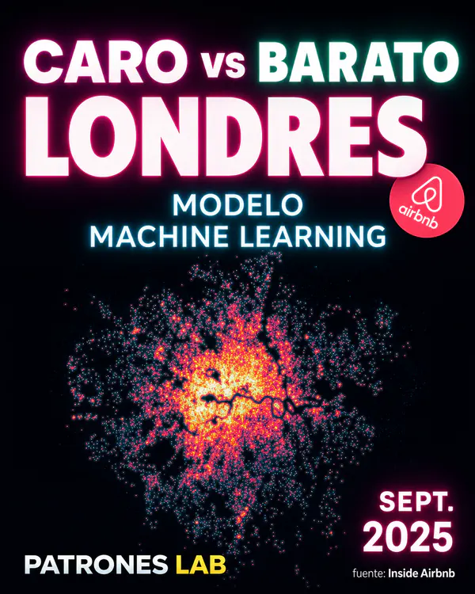

1
 Power BI
Power BI Qlik Облако
Qlik Облако Looker Studio
Looker Studio SQL-сервер
SQL-сервер
Открытие
Контекст и цельПонимание проблемы, решения, которое требуется улучшить, потребностей пользователей и ожидаемого результата.
Аналитика данных
Patrones Lab — лаборатория, в которой методы анализа данных применяются к реальным явлениям повседневной жизни.
Здесь создаются независимые проекты на основе открытых данных: они помогают выявлять закономерности, описывать поведение и представлять результаты в соответствующем контексте.
Цель — задавать вопросы, подготавливать данные, проводить понятный анализ и представлять результаты в визуальной форме.

Я Malcolm Di Pietro Cagliari, актуарий и специалист по Data & Analytics. Моя карьера сочетает в себе Бизнес-аналитику, корпоративную отчетность, моделирование данных и прогнозную аналитику, а также опыт работы в таких секторах, как банковское дело, страхование и воздушный транспорт.
Я специализируюсь на связи потребностей бизнеса с решениями на основе данных: определении KPI, структурировании информации, построении панелей мониторинга и разработке моделей, которые помогают лучше понимать, что происходит, и принимать решения с учетом более широкого контекста.
Понимание проблемы, решения, которое требуется улучшить, потребностей пользователей и ожидаемого результата.
Идентификация доступных источников, их происхождение, обновление, надежность и основные ограничения.
Организация, очистка и объединение данных для создания согласованной и пригодной к использованию основы.
Разработка необходимого анализа, модели или информационной панели в соответствии с поставленной целью.
Проверка согласованности, стабильности и соответствия результатов бизнес-реальности.
Документирование итоговой работы, автоматизация повторяющихся процессов и учет отзывов для будущих улучшений.
Подборка прикладных проектов с открытыми данными, описанием методологии и визуальными результатами. Используйте фильтры для поиска по направлению, инструменту или типу результата.

Анализ воздушного движения в Испании на основе общедоступных данных AENA с упором на объемы, закономерности по аэропортам и различия между категориями.

Предварительный анализ Airbnb в Лондоне для сравнения цен, типов размещения, доступности, минимального срока пребывания и различий между районами.

Анализ поездок на такси в Чикаго для изучения продолжительности, спроса, геопространственного распределения и моделей работы.

Модель классификации с логистической регрессией для выявления относительно дорогих и дешевых объявлений в каждом типе жилья.

Интерактивная панель управления в Looker Studio для изучения поездок на такси в Чикаго, операционных показателей, почасовых графиков и маршрутов посадки и высадки.

Модель логистической регрессии для оценки вероятности гола при каждом ударе на открытых данных StatsBomb, с проверкой по матчам и применением к чемпионату мира 2022 года в Катаре.
Открыть проект
Вероятностная модель ожидаемой угрозы в футболе на открытых данных StatsBomb. Модель оценивает вероятность гола в следующих пяти действиях.

✅ опубликовано
Кластеризация без учителя методом K-средних для выявления мошенничества с кредитными картами.

✅ опубликовано
Контролируемая классификация с использованием логистической регрессии для обнаружения мошенничества с кредитными картами.

✅ опубликовано
Неконтролируемая кластеризация с помощью DBSCAN для выявления потенциального мошенничества с кредитными картами.
Открыть проект
Анализ статистики чемпионата мира 2022 года с общедоступными данными StatsBomb, направленный на обобщение индивидуальных выступлений и сравнение игроков с помощью процентильного радара.

Геопространственный анализ поездок на такси в Чикаго, направленный на выявление зон наибольшей активности, городских маршрутов и территориальной концентрации спроса.

Интерактивная панель Power BI на основе Spotify Charts для анализа числа прослушиваний, рейтингов, динамики во времени и географического распределения музыки.

✅ опубликовано
Интерактивный отчет в формате Power BI для анализа расходов с поставщиками, ежемесячной динамики, распределения по категориям, экономии и географического распределения.

Моделирование миллиона сценариев чемпионата мира по футболу 2026 года с рейтингами Эло для оценки вероятности выхода в полуфинал, участия в финале и становления чемпионом.

Модель классификации для оценки экономического ущерба от метеорологических явлений, сравнение логистической регрессии с нейронной сетью.

Геопространственный анализ цен Airbnb в Лондоне с учетом расстояния до центра, районов и показателей географического соседства.

Моделирование миллиона сценариев LaLiga 2026/27 с рейтингами Эло для оценки вероятностей наиболее важных результатов чемпионата.

Модель количества забитых голов с распределением Пуассона для расчета силы атаки и защиты каждой команды в сочетании с моделированием Монте-Карло для оценки вероятности чемпионства.

Моделирование одного миллиона сценариев Лиги Наций 2026/27 с рейтингами Эло и моделью количества забитых голов на основе Пуассона для оценки вероятностей победы в группе, выхода в плей-офф и становления чемпионом.

Биномиальная модель для анализа вероятностей голов и исходов матчей на основе ударов и процента реализации 36 клубов Лиги чемпионов 2026/27.
Для профессиональных возможностей, аналитического сотрудничества или проектов BI · ML · Dashboards.
электронная почта: malcolm@patroneslab.com
Напишите мне и я отвечу вам как можно скорее.